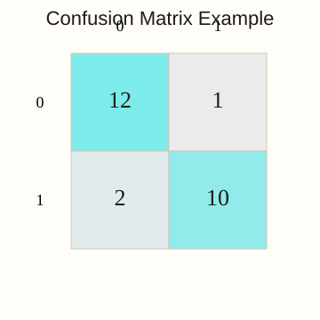
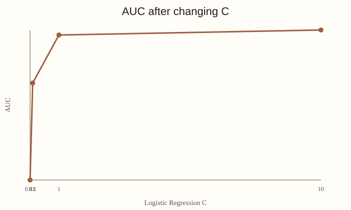
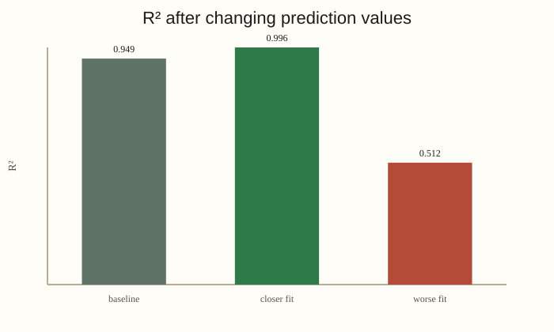
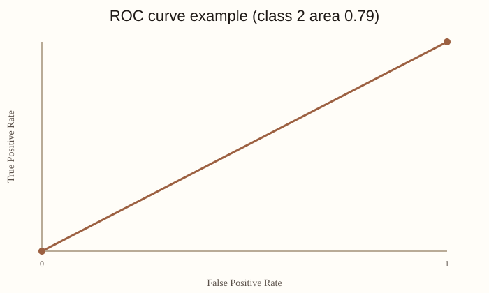

Model Performance Measurement
Task
The Unit 11 activity asked me to rerun the performance notebook, change parameters, and compare the effect on AUC and R2.
Notebook Workflow
The notebook covers classification metrics and regression metrics using small worked examples and standard datasets.
Core Metric Results
Key saved outputs were accuracy 0.5000, macro F1
0.2667, binary AUC 0.9947, multiclass AUC
0.9984, log loss 0.2162, MSE 0.3750, MAE
0.5000, and baseline R2 0.9486. The spread
shows why one metric is not enough.
AUC Parameter Changes
For AUC, I changed the logistic-regression C parameter in the
breast-cancer example.
C value |
AUC |
|---|---|
| 0.01 | 0.9847 |
| 0.1 | 0.9914 |
| 1.0 | 0.9947 |
| 10.0 | 0.9951 |
AUC increased slightly as C increased.
R2 Changes
For R2, I kept the true values fixed and changed the predictions to create a closer fit and a worse fit.
| Prediction set | R2 |
|---|---|
Baseline: [2.5, 0.0, 2, 8] |
0.9486 |
Closer fit: [2.8, -0.3, 2.1, 7.2] |
0.9955 |
Worse fit: [1.0, 1.5, 0.5, 5.0] |
0.5118 |
Closer predictions increased R2; worse predictions reduced it sharply.
What the Activity Showed
The main lesson was that metric choice must match the model type and the kind of error being evaluated.
Evidence


C

Learning Outcomes
Supports LO1, as specified in the activity brief.